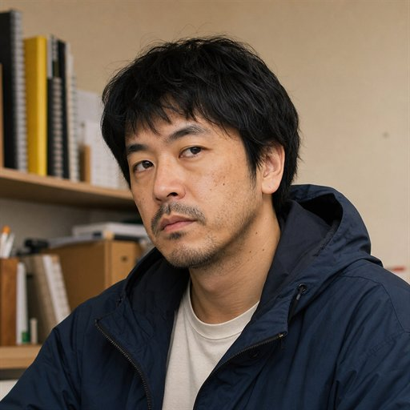
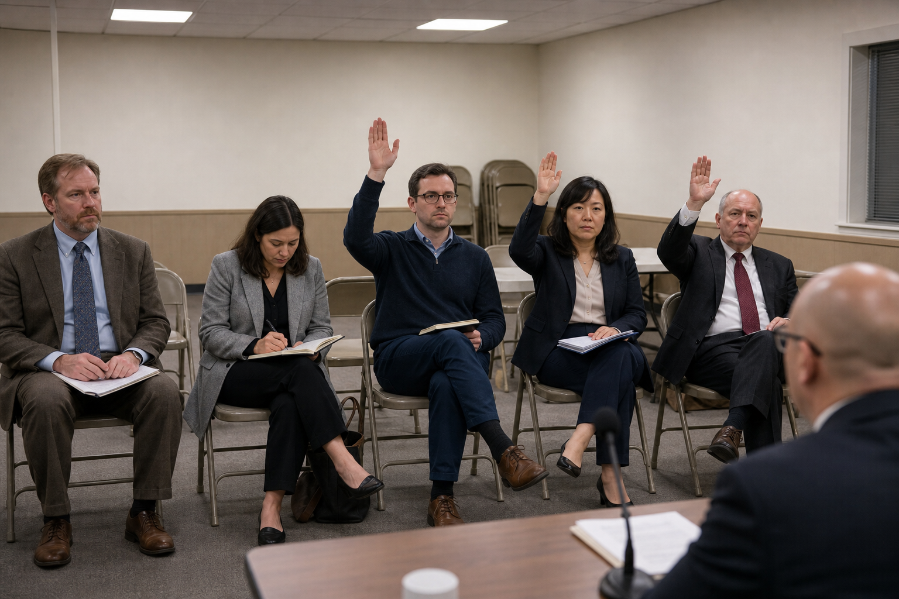
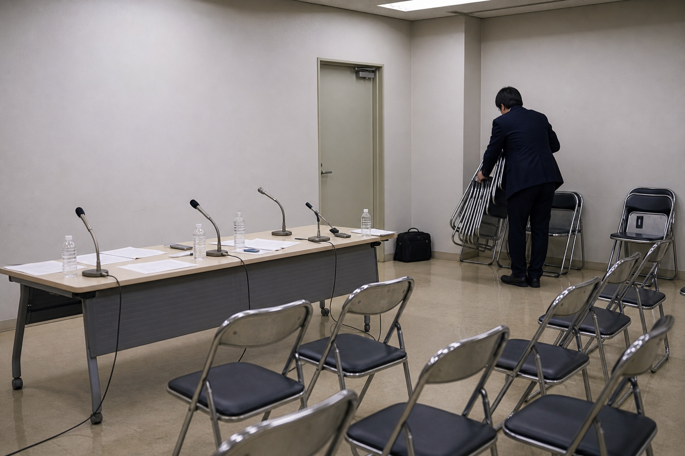

重大発表がないのに記者会見を開いたら、質問だけが強くなった
発表できる内容がないまま、記者会見の形式だけを本気で整えたら、資料、質疑応答、謝罪の空気だけが勝手に育っていきました。
参加: 風間すべり / 瀬戸ミナ / 久我さじ / 成瀬ポカ

画像: AI生成の写真風挿絵を含みます。
重大発表は、まだない。
でも、記者会見だけ先に開いてみたい。
そう思った。
よく考えると、順番がおかしい。
ふつうは、発表することがあるから会見をする。
今回は逆である。
会見をするから、何か発表があるように見える。

風間本日はお忙しい中、お集まりいただきありがとうございます。瀬戸集まる前に聞きたいんですけど、何を発表するんですか。
風間現時点で発表できる内容はありません。
久我では解散です。
成瀬待ってください。マイクを並べたら、何か起きるかもしれません。
起きるかもしれない。
この言葉は、会議を始めるには十分すぎる。
会場を作る
まず、会見らしいものを置いた。
マイク。
水。
白い資料。
白い名札。
どれも中身を説明していないのに、机の上に並ぶと急に責任が発生する。
瀬戸うわ。机だけ見ると、かなり何かありそう。
久我何かありそうな机、こわいですね。
成瀬白い資料って、印刷されていないだけで圧があります。
風間今日はこの圧を発表します。
久我圧は発表内容ではありません。
会見のルールはこうした。
- 登壇者は最後まで真面目に答える。
- 記者役は本当に質問する。
- ただし、発表内容はない。
三つ目が強すぎる。
この時点で、会見というより罰である。
冒頭あいさつ
開始時刻になった。
誰も遅れていない。
発表する内容も遅れている。
来ていない。
風間それでは、発表できる段階にない件について、会見を始めます。
瀬戸一文目でだいぶ危ない。
久我発表できる段階にないなら、会見できる段階にもないのでは。
風間そこは、今後の課題です。
成瀬出た。便利な箱。
「今後の課題」はすごい。
何も答えていないのに、答えた感じが少しだけ出る。
会見における折りたたみ傘である。
資料を配る
資料は全8ページにした。
なぜ8ページか。
2ページだと少ない。
20ページだと怒られそう。
8ページは、なんとなく検討した感じがある。
中身は次のようにした。
| ページ | 内容 |
|---|---|
| 1 | 表紙 |
| 2 | 余白 |
| 3 | 今後の方向性 |
| 4 | 余白 |
| 5 | 関係各所との調整 |
| 6 | 余白 |
| 7 | 質疑応答 |
| 8 | ありがとうございました |
ほとんど余白である。
でも、余白にもページ番号がつくと仕事に見える。
瀬戸3ページ目の「今後の方向性」って何が書いてあるんですか。
風間方向性を今後決める、と書いてあります。
久我方向性の前に、方向を決めてください。
成瀬でも資料が8ページあると、質問する側も背すじが伸びます。
背すじだけが伸びていく。
情報は伸びない。
記者席が本気になる
記者役を用意した。
質問する人がいると、会見は急に会見になる。
これは危ない。
何も発表していないのに、質問だけが勝手に具体的になっていく。

瀬戸質問です。今回の発表は、何についての発表ですか。
風間現時点で言えることは、発表に関する発表です。
久我発表を二回言うと、少しだけ中身が増えたように聞こえる。
成瀬では質問です。発表の発表は、発表に含まれますか。
風間そこは、発表後に整理します。
発表後。
便利な未来である。
今は何も持っていなくても、未来に投げると少し助かる。
未来は、会見で一番よく働くスタッフだった。
スライドを出す
言葉だけでは弱い。
そこでスライドを出した。
数字はない。
矢印はある。
棒グラフもある。
棒グラフは、何かが増えているように見える。
何が増えているかは、こちらにも分からない。
成瀬右肩上がりです。
瀬戸何が？
成瀬雰囲気が。
久我雰囲気を棒グラフにしないでください。
風間でも、横ばいよりは良いです。
横ばいよりは良い。
何に対して良いのか。
それを聞かれると、すぐに終わる。
だから聞かれないうちに次へ進む。
質問が細かくなる
最初はやさしい質問だった。
「これは何ですか」
「いつ発表しますか」
「なぜ今日ですか」
答えられないが、まだ逃げられる。
問題は、質問が細かくなってからだった。
瀬戸なぜ、このタイミングで会見を開いたんですか。
風間会議室が空いていたためです。
久我初めて本当の理由が出ました。
成瀬では、その会議室が空いていなかった場合、重大発表はなかったんですか。
風間重大発表は、会議室に依存しません。
久我ただ、この会見はかなり依存しています。
会見は、会議室に弱い。
かなり弱い。
場所がなくなると、急にただの立ち話になる。
だんだん謝罪会見に見えてくる
何も悪いことはしていない。
たぶん。
でも、マイクの前で長く黙ると、なぜか謝っているように見える。
水を飲むだけでも、何かを受け止めている感じが出る。
資料をめくると、さらにそう見える。
瀬戸すみません、今の空気、謝罪会見に近くないですか。
風間謝る内容はありません。
久我ただ、謝る姿勢だけはあります。
成瀬姿勢だけで謝罪が始まるの、こわい。
ここで一度、頭を下げるかどうか議論になった。
下げると謝罪になる。
下げないと態度が悪く見える。
何もしていないのに、姿勢だけで二択を迫られる。
会見は人間の首に厳しい。
共同声明を出す
このままだと終われない。
そこで、共同声明を出すことにした。
声明には強い響きがある。
「文章になっているなら、何か決まったんだろう」と思わせる力がある。
共同声明の内容はこうだ。
現時点で発表できることはありません。
ただし、発表できるようになった場合は、発表できるようになったことを発表します。
瀬戸読んだのに、読む前と同じ場所にいます。
久我同じ場所に戻る文章は、意外と疲れます。
成瀬でも「共同声明」って言った瞬間だけ、部屋が少し重くなりました。
風間重さは出ました。中身は出ていません。
中身がなくても、形式には体重がある。
最後の質問
最後に、いちばん大事な質問が来た。
瀬戸結局、今日は何だったんですか。
風間会見です。
久我内容ではなく、形を答えた。
成瀬形だけなら、かなり会見でした。
そう。
形だけなら、かなり会見だった。
マイクがあった。
資料があった。
質問があった。
沈黙があった。
「現時点でお答えできません」もあった。
内容以外は、だいたい全部あった。
片付け
会見は終わった。
何も発表していないのに、片付けだけは発生した。
机を戻す。
イスをたたむ。
水を捨てる。
白い資料をまとめる。
内容がなくても、ゴミは出る。

瀬戸疲れましたね。
久我情報量ゼロで、疲労だけが発生しました。
成瀬すごい。会見って、内容がなくても体力を使うんだ。
風間本日の発表は以上です。
久我最初から以上でした。
今回わかったこと。
重大発表がなくても、記者会見は開ける。
ただし、開いた瞬間に質問が生まれる。
質問が生まれると、答えが必要になる。
答えがないと、「今後の課題」が増える。
つまり、何も発表しない会見は、何もしていないのに宿題だけ増える。
会見は、空っぽでも議事録を残す。